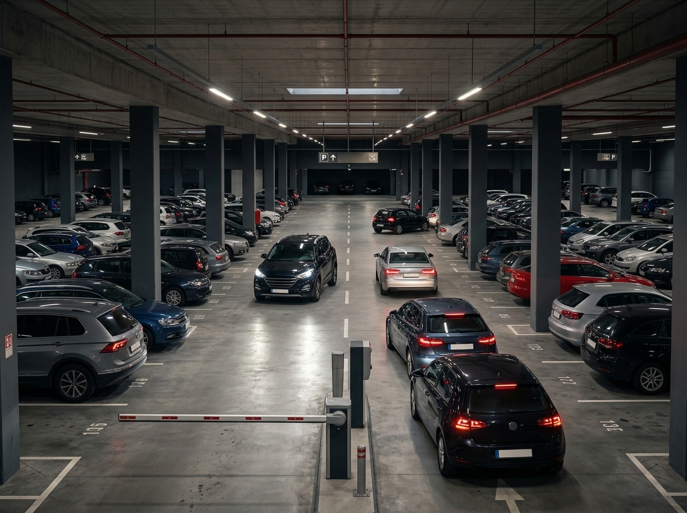
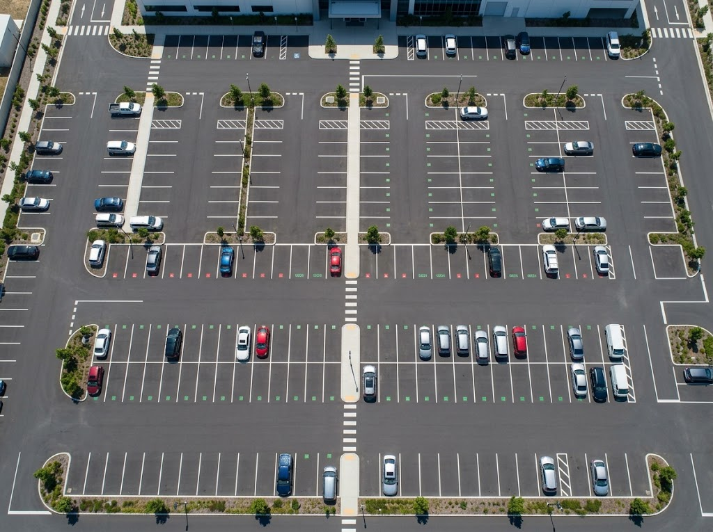
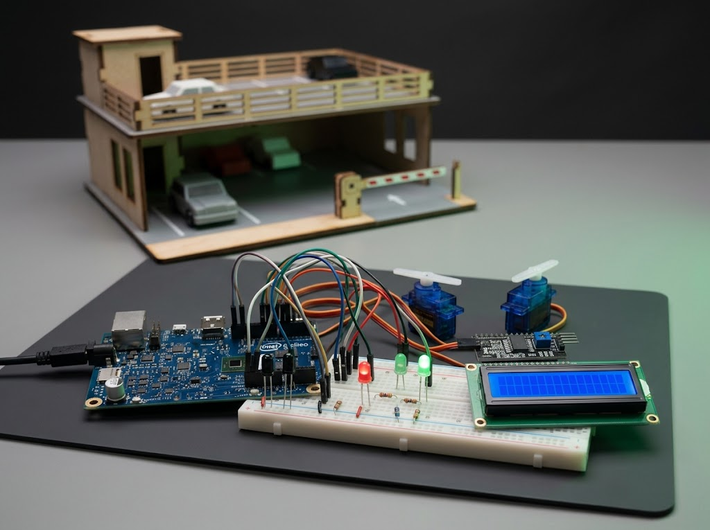
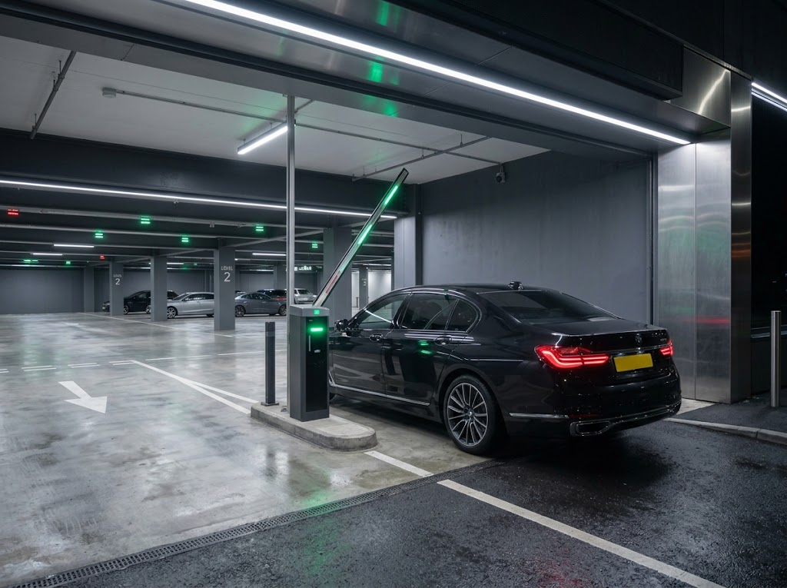
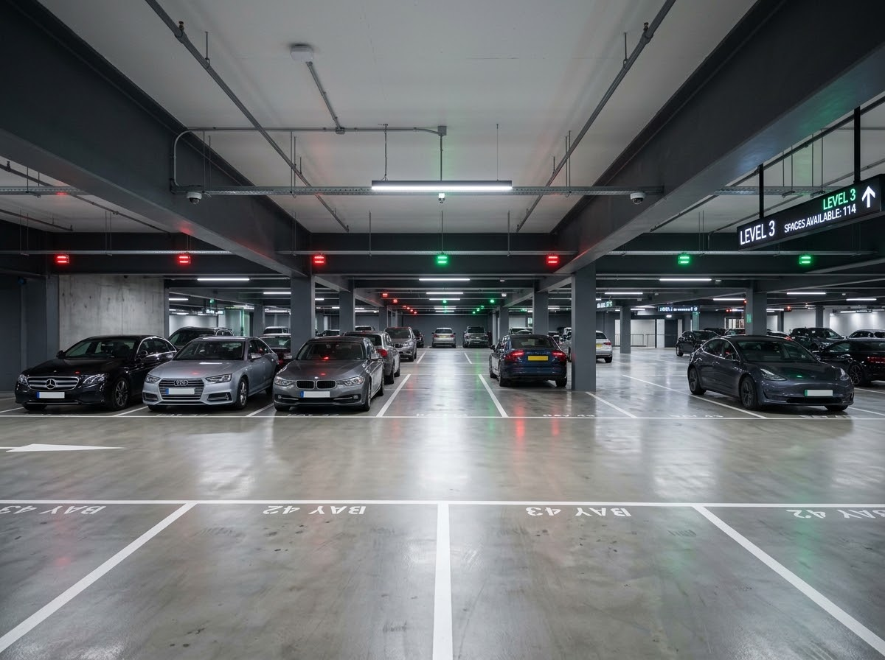

An intelligent IoT-based parking solution that automates garage gates, detects parking availability in real time, and enables remote monitoring for a smarter, faster, and more efficient parking experience.

Parking garages often face challenges such as difficulty finding available parking spaces, long waiting times at entrances, and inefficient parking management. These problems can waste drivers' time and make it difficult to monitor parking availability.

The project aims to detect occupied and available parking spaces using IR sensors, automate entrance and exit gates, display parking information on an LCD, and indicate parking status using LEDs. It also aims to provide real-time parking updates and enable remote monitoring through an online dashboard.

The proposed Smart Automated Garage System uses an Intel Galileo Gen 2 board to process data collected from IR sensors and control the garage gates, LEDs, and LCD. It transmits parking information through Ethernet using MQTT, allowing users to monitor parking availability and gate status through an online dashboard.

The system is expected to reduce vehicle waiting time, improve parking space management, and provide accurate, real-time information about parking availability. It also offers automatic gate control and remote monitoring, making garage operation more efficient and convenient.

The system is intended for parking garage operators, facility managers, and drivers who need to check parking availability. It helps operators monitor garage activity and manage parking spaces more efficiently, while drivers can benefit from easier access to available parking information.